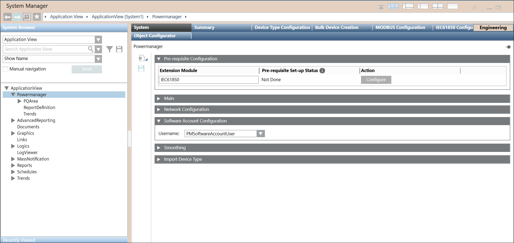

Configure Prerequisites for IEC 61850 devices
Configuring prerequisites will configure drivers, networks and assigning driver to network with once click. To manually create driver and network, refer Additional IEC 61850 Procedures.
- You have added IEC 61850 Adaptor extension module to project. Refer Adding IEC 61850 Adaptor Extension Module to the Project in Installing IEC 61850 Adaptor Extension Module.
- In System Browser, select ApplicationView > Powermanager.
- Navigate to System tab > Pre-requisite Configuration expander.
- Click Configure for IEC 61850 extension module.
- Pre-requisite Set-up Status changes to Done.
NOTE: When the Configure button is clicked, a default network name of IEC (3 characters) is created and it can be selected from the Network Name drop-down under the Network Configuration expander. 
NOTE: If you upgrade the Powermanager to the latest version from an earlier version, the IEC network must be configured again.
- Navigate to Software Account Configuration expander.
- Select the software account required for PowerQuality from the drop-down menu. To create software account, refer New Software Account User.
- Click Save
 .
.
- Prerequisites configured successfully.

NOTE: If you upgrade the Powermanager to the latest version from an earlier version, the IEC network must be configured again. Follow this procedure to configure the network.